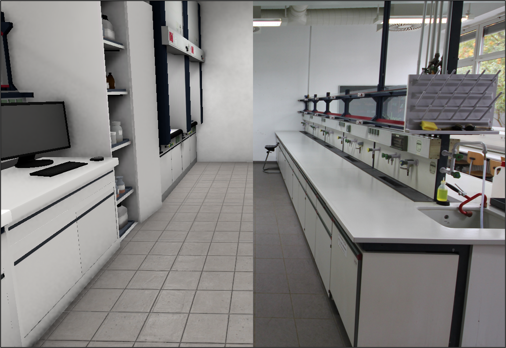

6 Kriterien
6.1 Kumulatives Lernen
Sascha Bernholt
Allgemeine Einführung/Beschreibung
Unter kumulativem Lernen versteht man einen Lernprozess, bei dem neues Wissen systematisch auf bereits vorhandenem Wissen aufbaut, dieses vertieft, erweitert und vernetzt (Bransford et al., 2000). Es ist das Gegenteil von “punktuellem” oder “episodischem” Lernen, bei dem Lerninhalte isoliert nebeneinanderstehen und nach der Prüfung oft wieder vergessen werden (“Bulimie-Lernen”). Kumulatives Lernen basiert auf der Annahme, dass Wissen aktiv in bestehende kognitive Strukturen integriert werden muss (Assimilation/Akkommodation nach Piaget; allgemein: Konstruktivismus). Der Begriff wurde von Gagné (1970) geprägt, wobei Lernen von ihm als Hierarchie verstanden wird, in der komplexere intellektuelle Fähigkeiten die Beherrschung einfacherer Teilkompetenzen voraussetzen. Das Konzept des Spiralcurriculums nach Bruner (1980), bei dem Themen auf steigendem Abstraktionsniveau wiederholt aufgegriffen werden, ist damit eng verwandt. Bei der Art des “Vertiefens” oder “Vernetzens” wird generell zwischen vertikaler und horizontaler Vernetzung unterschieden, womit entweder die Vernetzung zwischen Themen oder Schulfächern (vertikal) oder von Kompetenzen und Inhalten über Schuljahre und Bildungsstufen hinweg gemeint sind. Auch wird oft zwischen inhaltlich-systematischer Kumulation und kompetenzorientierter Kumulation (z. B. fachmethodische Fähigkeiten) unterschieden (Bernholt et al., 2018).
Befunde zur Wirkung
Kumulatives Lernen gilt als entscheidender Faktor für den Aufbau von anschlussfähigem Wissen und die Vermeidung der Anhäufung vom “trägem” Wissen (Renkl, 2002). Ein Fokus der Wirkungsforschung liegt daher auf der Förderung des Wissenstransfers auf neue Anwendungskontexte und langfristige Behaltensleistung. Die PISA- und TIMSS-Studien zeigten für Deutschland Defizite im kumulativen Wissensaufbau (besonders in den Naturwissenschaften; (Baumert, 1997). Die Wirksamkeit kumulativ abgestimmter Lerngelegenheiten wird auch von Hattie (2009) hervorgehoben, dort unter den Stichworten “prior achievement” (als individueller Prädiktor) und “integrative models” (als Interventionsansatz). Neuere Meta-Analysen deuten darauf hin, dass die prädiktive Wirkung des Vorwissens steigt, je spezifischer dieses Vorwissen ist (Simonsmeier et al., 2021). Auch Längsschnittstudien zeigen, dass Lernende, die Vernetzungen aktiv herstellen, in späteren Lernphasen deutlich schneller neue Konzepte integrieren können (allerdings gibt es nur sehr wenige, Bernholt et al., 2019).
Literaturbeispiele zur Umsetzung
Ein Fokus auf kumulatives Lernen findet sich in vielen Reformprojekten. Im SINUS-Programm (Steigerung der Effizienz des mathematisch-naturwissenschaftlichen Unterrichts) war “Kumulatives Lernen” eines der zentralen Module zur Unterrichtsentwicklung (SINUS, 1999). In Kontextorientierten Ansätze wie Chemie im Kontext (ChiK) sollten Basiskonzepte kumulative Lernpfade über verschiedene Kontexte hinweg strukturieren (was aber nur wenig untersucht wurde, Demuth et al., 2008). Die Forschergruppe Naturwissenschaftlicher Unterricht (NWU) an der Universität Duisburg-Essen hat Wirkungen vertikaler Vernetzungen in mehreren, koordinierten Forschungsarbeiten untersucht (Fischer & Sumfleth, 2013; Neumann et al., 2008). Neuere Ansätze werden unter dem Ansatz der Learning Progressions durchgeführt (Bernholt & Sevian, 2018; Duschl et al., 2011).
Umsetzungsbeispiel
Im Rahmen des ALICE-Projekts wurde im Teilprojekt Chemie (Lossjew & Bernholt, 2025) das Verständnis chemischer Reaktionen in der Oberstufe untersucht. Der Fokus lag dabei auf den Themen Reaktionskinetik und chemisches Gleichgewicht. In der Studie wurde untersucht, wie sich die konzeptuellen Modi der Schüler:innen – spezifische Denkweisen über den Beginn, den Verlauf und das Ende chemischer Reaktionen (Yan & Talanquer, 2015) – durch den an einem Progressionsmodell orientierten Unterricht entwickeln. Anhand eines quasi-longitudinalen Designs wurden N = 183 Schüler:innen der Sekundarstufe II vor und nach der Durchführung der digital umgesetzten Unterrichtseinheit (Lossjew, 2025) mit Hilfe von offenen Aufgaben befragt. Die konzeptuellen Modi wurden sowohl deskriptiv als auch inferentiell analysiert, wobei Differenz-in-Differenzen-Schätzungen und ordinale logistische Regression einbezogen wurden, um die Auswirkungen des Unterrichts und die Rolle von Vorwissen und fachlichem Interesse zu untersuchen. Die Ergebnisse zeigen signifikante Übergänge zu einem elaborierteren mechanistischen Denken, insbesondere bei Schüler:innen, die sowohl Unterricht zu Kinetik als auch zu Gleichgewicht erhielten. Vorherige konzeptuelle Modi erwiesen sich als starker Prädiktor für das Verständnis nach der Einheit, was die kumulative Natur der konzeptuellen Entwicklung unterstreicht (Lossjew & Bernholt, subm.).
Umsetzungsfacetten
Eine systematische Umsetzung kumulativer Lernansätze zeichnet sich durch folgende Indikatoren aus:
- Fokus auf zentrale Konzepte oder Kompetenzen (die je nach Fach, Land oder Forschungsrichtung in den jeweiligen Publikationen als Basiskonzepte, Leitideen, Big Ideas, Cross-cutting Concepts o.ä. bezeichnet werden), die als roter Faden dienen.
- Systematische Aufgaben zur Vorwissensaktivierung, um wiederholt und explizit Rückbezüge auf früher gelernte Inhalte zu Beginn neuer Sequenzen oder im Verlauf der Lerneinheit herzustellen (vertikale Vernetzung) und/oder wiederholte Herstellung von Querbezügen (horizontal) und die vertiefende Weiterführung (vertikal).
- Seltener: Förderung metakognitiver Fähigkeiten, um Lernende darin zu unterstützen, selbst zu reflektieren, wie neues Wissen mit altem zusammenhängt (bspw. Maßnahmen zur Zielklärung, zum Umgang mit Feedback, zur Selbsteinschätzung).
Umsetzung im Prozess
Der Prozess der Umsetzung kann auf mehreren Ebenen betrachtet werden:
- Curriculare Ebene: Erstellung längerfristiger Curricula oder Lehrpläne, die Progressionen festlegen, die über längere Zeiträume (Monate bis mehrere Schuljahre) umfassen.
- Unterrichtsebene: Planung von Unterrichtseinheiten als “Lernpfade”, die ein Thema (selten auch mehrere Themen) systematisch erschließen und dabei Vorwissen und Vorbereitung nachfolgender Themen berücksichtigen.
Bei der Konzeption eines Spiralcurriculums bzw. eines Lernpfads muss die Sachstruktur des jeweiligen Fachs (oder, im Fall vertikaler Vernetzung, der jeweiligen Fächer) in eine Sachstruktur des Unterrichts überführt werden; dabei müssen zentrale Bezüge zwischen den Inhalten herausgearbeitet werden. Im Unterricht müssen diese Bezüge dann sinnhaft hergestellt werden. Dabei kommt Basiskonzepten (bzw. Leitideen, …) als von außen in den Prozess der Wissensaneignung eingebrachte Elemente, die in optimaler Weise zum kumulativen Aufbau neuer Wissensstrukturen beitragen sollen, ein besondere Bedeutung bei. Dieser Prozess der Analyse der Sachstruktur und ihrer Rekonstruktion wird auch als Elementarisierung (z.B. Reinhold, 2006) oder didaktische Rekonstruktion (Kattmann et al., 1997) bezeichnet. Relevante Stakeholder sind in diesem Kontext natürlich Schüler:innen und Lehrkräfte, ggf. auch Schulleitungen oder Mitglieder von Fachkommissionen (bspw. zur Überarbeitung von Lehrplänen). Schüler:innen kommt dabei in erster Linie eine evaluative Rolle zu (mit Blick auf “üblichen” Unterricht oder zur Einschätzung einer Intervention), während die anderen Gruppen (auch) in Planungs- und Reflexionsprozesse kumulativer Lernpfade oder Curricula eingebunden werden können.
Ansätze zur Absicherung der Umsetzung
Um zu prüfen, ob und inwieweit kumulativ unterrichtet wird, finden sich in der Literatur unterschiedliche Ansätze:
- Curriculum-Analysen: Abgleich der Unterrichtspläne auf Redundanzen und Progressionslücken.
- Fidelity-Checks: Beobachtung oder Befragung (i.d.R. von Schüler:innen, manchmal auch von Lehrkräften), ob Vorwissen tatsächlich aktiv verknüpft wird.
- Concept Maps: Visualisierung der Wissensstruktur von Lernenden zu verschiedenen Zeitpunkten.
- Unterrichtsbeobachtungen: Häufigkeit von Rückbezügen im Unterrichtsgespräch; Qualität der Aufgabenstellungen (beziehen diese explizit Wissen aus dem Vorthema/Vorjahr ein?)
Ansätze zur Untersuchung der Wirkung
Generell werden Interventionsstudien und Längsschnittstudien als mittel der Wahl angegeben. Aufgrund der Zeitskala sind diese aber i.d.R. sehr aufwändig und daher entsprechend selten. Beispiel für einen Interventionsansatz sind Studien zum IQUEST-Curriculum, in denen eine “kumulative” Unterrichtseinheit gegen “traditionellen” Unterricht verglichen wurde (Krajcik et al., 2007). Unterschiedliche “kumulative” Ansätze wurden im Projekt Elevate (Fortus et al., 2019) verglichen. Längsschnittuntersuchungen im Chemieunterricht finden sich bei Bernholt et al. (2019) oder Fischer & Sumfleth (2013). Hier wurde vor allem versucht, durch Konzept- bzw. Kompetenztests die Lernentwicklung über mehrere Schuljahre abzubilden. “Kürzere” Studien versuchen Effekte kumulativen Lernens durch Transfertests zu untersuchen. Kehne (2019) hat dies auf Basis unterschiedlich kontextualisierter Unterrichtseinheiten analysiert. Generelle Indikatoren sind häufig (höhere) Lernzuwächse, Transferraten oder die Stabilität des Wissens über die Zeit (follow-up tests), manchmal auch inhaltliche Indikatoren wie die Komplexität/Vernetztheit kognitiver (konzeptbezogener) Strukturen auf Basis von Interviews, offener Antworten oder Concept Maps.
Quellen
6.2 Kognitive Belastung/ Cognitive Load
Anja Annemüller
Allgemeine Einführung/Beschreibungmeine Einführung/Beschreibung
Der Begriff Cognitive Load beschreibt die kognitiven Anforderungen, die eine Lernaufgabe an das Arbeitsgedächtnis stellt. Die zugrunde liegende Cognitive Load Theory (CLT) geht davon aus, dass das menschliche Arbeitsgedächtnis nur eine begrenzte Menge an Informationen gleichzeitig verarbeiten kann, während das Langzeitgedächtnis über eine sehr große Kapazität zur Speicherung von Wissensstrukturen verfügt. Lernen wird daher maßgeblich davon beeinflusst, wie stark das Arbeitsgedächtnis durch eine Lernaufgabe beansprucht wird (Sweller et al., 1998; Sweller, 2020). Ziel instruktionalen Designs ist es daher, dass kognitive Ressourcen effizient genutzt werden und der Aufbau von Wissensstrukturen (Schemas) unterstützt wird.
Die Cognitive Load Theory unterscheidet drei Arten kognitiver Belastung (Sweller et al., 1998):
- Intrinsic cognitive load: ergibt sich aus der inhärenten Komplexität des Lerngegenstands bzw. aus der Anzahl gleichzeitig zu verarbeitender Informationselemente.
- Extraneous cognitive load: entsteht durch die Art der Präsentation von Informationen oder durch Aufgabenformate, die zusätzliche kognitive Verarbeitung erfordern, ohne direkt zum Lernen beizutragen.
- Germane cognitive load: bezeichnet kognitive Ressourcen, die tatsächlich für den Aufbau und die Organisation von Wissensstrukturen eingesetzt werden.
Ein zentrales Ziel instruktionalen Designs besteht daher darin, extraneous load zu reduzieren, intrinsic load angemessen zu steuern und germane load zu fördern
Befunde zur Wirkung
Zahlreiche empirische Studien zeigen, dass instruktionale Designs, die unnötige kognitive Belastung reduzieren, positive Effekte auf Lernerfolg, Problemlösefähigkeit und Wissenstransfer haben. Besonders gut untersucht sind dabei instruktionale Maßnahmen, die Suchprozesse beim Problemlösen reduzieren oder die Aufmerksamkeit gezielt auf relevante Informationen lenken. Ein besonders gut untersuchter Ansatz ist das Lernen mit Worked Examples. Dabei werden Aufgaben gemeinsam mit ihren vollständigen Lösungsschritten präsentiert. Dies reduziert Suchprozesse beim Problemlösen und ermöglicht es Lernenden, sich stärker auf den Aufbau von Problemlöseschemata zu konzentrieren (Renkl, 2014). Auch Designprinzipien aus der Multimediaforschung zeigen konsistente Effekte. Beispielsweise konnte gezeigt werden, dass Signalling – also das Hervorheben zentraler Elemente in komplexen Darstellungen – die Aufmerksamkeit von Lernenden gezielt auf relevante Informationen lenkt, extraneous cognitive load reduziert und Lernleistungen verbessert (Rodemer et al., 2023). Gerade in naturwissenschaftlichen Fächern mit komplexen visuellen Darstellungen, wie der Chemie, kann eine gezielte Gestaltung von Lernmaterialien dazu beitragen, dass Lernende relevante Merkmale schneller erkennen und kognitive Ressourcen stärker für konzeptuelles Verständnis genutzt werden.
Literaturbeispiele zur Umsetzung
Eine Studie von Rodemer et al. (2023) untersuchte die Wirkung unterschiedlicher Signalling-Formen in instruktiven Videos zu organischen Reaktionsmechanismen. In einem Eye-Tracking-Experiment mit Studierenden wurden drei Bedingungen verglichen: Videos ohne , mit statischen und mit dynamischen Hervorhebungen. Neben Blickbewegungen wurden auch Lernleistungen sowie subjektiv berichtete kognitive Belastung erhoben. Die Ergebnisse zeigen, dass dynamische Hervorhebungen die Aufmerksamkeit der Lernenden stärker auf relevante Bereiche der Repräsentationen lenken und gleichzeitig extraneous cognitive load reduzieren können. Zudem zeigten Lernende in dieser Bedingung höhere Retentionsleistungen. Die Studie verdeutlicht damit die Bedeutung von instruktionalem Design bei der Arbeit mit komplexen fachlichen Darstellungen und zeigt exemplarisch, wie Prinzipien der Cognitive Load Theory in multimedialen Lernumgebungen umgesetzt werden können
Umsetzungsbeispiel
Im Rahmen des Forschungsprojekts “Adaptive Unterstützung beim Problemlösen in der Organischen Chemie” (ATP-OC) wurde untersucht, wie unterschiedliche instruktionale Ansätze Lernprozesse bei der Arbeit mit Reaktionsmechanismen beeinflussen und welche Formen instruktionaler Unterstützung das Problemlösen von Studierenden besonders effektiv fördern können. Ausgangspunkt ist die Annahme, dass mechanistisches Problemlösen sowohl hohe repräsentationale Anforderungen als auch hohe kognitive Belastung mit sich bringt. In einer experimentellen Studie mit Studierenden wurden zwei instruktionale Ansätze verglichen: perceptual learning tasks, die darauf abzielen, diagnostisch relevante strukturelle Merkmale in Molekülrepräsentationen schneller zu erkennen, sowie worked examples, die Lösungswege schrittweise darstellen und so Suchprozesse beim Problemlösen reduzieren und den Aufbau von Problemlöseschemata unterstützen. Bei der Entwicklung der Lernmaterialien wurden zentrale Designprinzipien der Cognitive Load Theory berücksichtigt, insbesondere solche, die auf eine Reduktion extraneous cognitive load abzielen (z. B. klare Strukturierung der Materialien, Hervorhebung relevanter Informationen sowie eine schrittweise Darstellung von Lösungsprozessen). Die Materialien wurden in mehreren Iterationsschritten entwickelt und im Rahmen von Expert*innenbefragungen sowie Testdurchläufen mit der Zielgruppe überprüft und überarbeitet, um potenzielle Verständnishürden zu identifizieren und unnötige kognitive Belastung zu reduzieren.
Umsetzungsfacetten
Eine systematische Umsetzung von Cognitive-Load-Prinzipien in Lernmaterialien kann sich durch verschiedene Gestaltungsmerkmale auszeichnen:
Reduktion extraneous load:
- klare Strukturierung von Materialien
- räumliche Nähe zusammengehöriger Informationen
- Vermeidung redundanter Darstellungen - Hervorhebung relevanter Elemente (Signalling)
Steuerung intrinsic load:
- Segmentierung komplexer Inhalte
- schrittweiser Aufbau von Lösungsprozessen
- Anpassung der Aufgabenkomplexität an das Vorwissen der Lernenden Förderung
germane load:
- explizite Darstellung von Lösungsstrategien
- Nutzung von worked examples
- Aufgabenformate, die den Aufbau konzeptueller Zusammenhänge unterstützen
Die genannten Gestaltungsprinzipien lassen sich aus zentralen Instructional-Design-Effekten der Cognitive Load Theory ableiten, wie etwa dem worked example effect, split-attention effect oder redundancy effect (Mayer, 2021; Sweller et al., 1998; Sweller, 2011).
Umsetzung im Prozess
Die Berücksichtigung kognitiver Belastung kann in verschiedenen Phasen der Materialentwicklung erfolgen. Zunächst kann analysiert werden, welche Aspekte eines Lerngegenstands besonders hohe intrinsic cognitive load erzeugen (z. B. viele miteinander verknüpfte Konzepte oder komplexe Repräsentationen). Darauf aufbauend können Lernmaterialien so gestaltet werden, dass diese Komplexität schrittweise eingeführt wird. Für die Entwicklung entsprechender Materialien eignen sich insbesondere iterative Entwicklungsansätze wie Design-Based Research, bei denen Materialien wiederholt entwickelt, erprobt und überarbeitet werden.
Ansätze zur Absicherung der Umsetzung
Die Umsetzung von Cognitive-Load-Prinzipien kann auf unterschiedliche Weise überprüft werden, beispielsweise:
- Expertenanalysen von Lernmaterialien, z. B. hinsichtlich der Einhaltung von Multimedia-Designprinzipien
- Qualitative Nutzungsstudien mit Lernenden (z. B. Think-Aloud-Protokolle während der Bearbeitung), um zu untersuchen, wie Aufgaben verarbeitet werden, welche Informationsquellen genutzt werden und an welchen Stellen unnötige kognitive Belastung oder Verständnisschwierigkeiten entstehen.
Ansätze zur Untersuchung der Wirkung
- Befragungen von Lernenden zur wahrgenommenen kognitiven Belastung (Kriegelstein)
- Analyse von Bearbeitungszeiten oder Prozessdaten in digitalen Lernumgebungen
- Analyse der Lern-Leistung
Quellen
6.3 Adaptivität
Gyde Asmussen
Allgemeine Einführung/Beschreibung
Adaptivität beschreibt die Anpassung von Lernumgebungen definedndefined [^Lernumgebung umfasst hierbei alles von ganzen Unterrichtskursen bis hin zu spezifischen Einzelmaterialien] an die individuellen Voraussetzungen, Bedürfnisse oder Lernprozesse der Lernenden. Diese Anpassung basiert auf der Annahme, dass Lernen effektiver ist, wenn Lernumgebungen auf die Lernenden zugeschnitten werden: entweder indem der Lernweg und Unterstützungsangebote für das Erreichen eines gemeinsamen Lernziels differenziert werden, oder indem für Lernende, die das Lernziel bereits erreicht haben, anspruchsvollere Lernziele und Lerngelegenheiten bereitgestellt werden, um das volle Lernpotenzial auszuschöpfen (Deunk et al., 2015). Eine solche Anpassung erfordert stets die Erhebung und Nutzung von Lernendendaten, an die die Anpassung stattfinden kann. Hierbei ist zum einen entscheidend an WAS und zum anderen WIE sich die Lernumgebung anpasst.
WAS: Es gibt eine Vielzahl an Lernendendaten, an die sich die Lernumgebung anpassen kann. Zu diesen gehören Vorwissen, Wissenszuwachs, Lösungsstrategien, Fehler, Lernstrategien, Einstellungen, Werte, Motivation, Interesse, Kultur, und noch viele weitere (Aleven et al., 2025; Plass & Pawar, 2020). Diese können als kognitive, motivationale, affektive und sozio-kulturelle Variablen zusammengefasst werden (Plass & Pawar, 2020).
WIE: Lernumgebungen können auf unterschiedlichen Ebenen angepasst werden. Aleven et al. (2025) unterscheiden hierbei in Design-Loop, Task-Loop und Step-Loop. In der Design-Loop wird die gesamte Lernumgebung basierend auf vorab erhobenen Lernendendaten entwickelt und auf deren Bedürfnisse abgestimmt. In der Task-Loop werden basierend auf der vorherigen Aufgabenbearbeitung der Lernenden innerhalb der Lernumgebung weitere geeignete instruktionale Aufgaben ausgewählt. In der Step-Loop werden innerhalb der Aufgabenbearbeitung basierend auf der aktuellen Bearbeitung der Lernenden Anpassungen an der Lernumgebung vorgenommen. Bei Plass & Pawar (2020) sind das das Makro-Level und Mikro-Level. Das Makro-Level beschreibt die Anpassung der Lernumgebung innerhalb der Planung, während das Mikro-Level die Anpassung der Lernumgebung innerhalb der Situation beschreibt.
Befunde zur Wirkung
Studien zur Effektivität von Adaptivität zeigen insgesamt eine positive Tendenz, allerdings gibt es auch gemischte Befunde. Kulik und Fletcher (2016) haben in ihrer Meta-Analyse zu intelligenten tutoriellen Systemen einen positiven mittleren Effekt berichtet, bei Steenbergen-Hu & Cooper (2013) war dieser Effekt klein, mit sehr großen Variationen zwischen den Studien. Létourneau et al. (2025) haben ein systematisches Review zu intelligenten tutoriellen Systemen, die AI einsetzen, durchgeführt. Auch hier zeigte sich insgesamt ein positiver Effekt. Allerdings zeigte sich übergreifend, dass die Wirksamkeit von der Umsetzung der Adaptivität und der Art der Messung abhängt.
Literaturbeispiele zur Umsetzung
Es gibt zahlreiche Beispiele, die Adaptivität innerhalb eines Projekts umgesetzt haben. Die folgenden Beispiele stammen vorwiegend aus der Hochschule, meist aus der organischen Chemie und fokussieren auf kognitive Variablen (Ariely et al., 2024; Dood et al., 2020; Lieber et al., 2022; Martin et al., 2026; Young et al., 2021).
Im Promotionsprojekt von Gyde Asmussen wurde adaptive Unterstützung für das Problemlösen in der organischen Chemie, speziell für die Reaktionsmechanismen nukleophile Substitution und Eliminierung zweiter Ordnung entwickelt. Die adaptive Unterstützung wurde in Form von gestuften Hilfekarten, die aus Prompts und Informationen zusammengesetzt waren, entwickelt. Der Entwicklung ging eine Studie voraus, in der die Schwierigkeiten von Studierenden mit diesen Reaktionsmechanismen erhoben und systematisiert wurden. Die Entwicklung der Hilfekarten basierte auf dieser Systematik (kognitive Variablen). Die Hilfekarten wurden innerhalb einer Interviewstudie erprobt. Die Studierenden erhielten die Hilfekarten, wenn sie im Problemlöseprozess auf Schwierigkeiten stießen (Step-Loop). Hierbei wurde der Umgang der Studierenden mit der adaptiven Unterstützung untersucht, um Implikationen für die Entwicklung eines intelligenten tutoriellen Systems abzuleiten. Es hat sich gezeigt, dass die Hilfekarten wirksam waren und von den Studierenden genutzt wurden. Gleichzeitig hat sich auch gezeigt, dass die Analyse der Lernendendaten ein Schlüsselpunkt für die Auswahl geeigneter Unterstützung ist und dass ein intelligentes tutorielles System hoch flexibel sein muss, da die Problemlöseprozesse und die Auswirkung der adaptiven Unterstützung auf diesen sehr unterschiedlich sein kann. Die digitale Umsetzung der Unterstützung erfolgt im Projekt ATP-OC. Bei einer erneuten Entwicklung von adaptiver Unterstützung sollte darauf geachtet werden, dass neben kognitiven Variablen auch auf meta-kognitive Aspekte eingebunden werden. Insbesondere sollte den Lernenden Raum für Selbstreflexion gegeben werden. Dieses wurde bei der beschriebenen Umsetzung von Adaptivität nicht gemacht und hätte den Studierenden an vielen Punkten weitergeholfen. Ganz speziell wären Hilfekarten sinnvoll gewesen, die zur Reflexion der eigenen Lösung, vielleicht sogar mit Beispielen, welche Aspekte der Lösung speziell reflektiert werden sollten, anregen. In folgenden Artikeln können Details der Umsetzung nachgelesen werden (Asmussen et al., 2023, 2025).
Umsetzungsfacetten
Eine systematische Umsetzung von Adaptivität zeichnet sich durch folgende Indikatoren aus:
- Lernendendaten werden oder wurden in irgendeiner Form (z.B. Lernende dürfen nach eigener Präferenz entscheiden, Lernende füllen einen Vorwissenstest aus usw.) erhoben
- Lernende erhalten in irgendeiner Form ein unterschiedliches Treatment (der Grad der Differenzierung kann dabei sehr unterschiedlich ausfallen: z.B. zwei vorgefertigte Treatments und Lernende erhalten, je nach genutzten Lernendendaten, das was besser zu ihnen passt; jeder erhält ein individuelles Treatment usw.)
Umsetzung im Prozess
siehe Design-Loop, Task-Loop, Step-Loop. Makro-Level, Mikro-Level
Ansätze zur Absicherung der Umsetzung (Implementation-Check)
- Wie lässt sich der Grad bzw. Erfolg der Umsetzung des Kriteriums (individuell oder inter-subjektiv) evaluieren? Welche methodische Herangehensweise und welche Indikatoren lassen sich dafür heranziehen?
Ansätze zur Untersuchung der Wirkung (Effect check)
- Wie lässt sich die Wirkung der Kriteriumsumsetzung (im Sinne einer Intervention) überprüfen? Welche methodische Herangehensweise und welche Indikatoren lassen sich dafür heranziehen?
6.4 Kontextualisierung
Max Traub
Allgemeine Einführung/Beschreibung
Kontextualisierung oder kontextbasiertes Lernen (CbL) kam in den 1980er Jahren auf, um das Verständnis von naturwissenschaftlichen Phänomenen durch die Verknüpfung der zu vermittelnden Konzepte mit out-of-school-Situationen zu verbessern, indem das Interesse der Schüler und der Lernerfolg bezüglich der vermittelten Konzepte erhöht wird (van Vorst & Aydogmus, 2021). Im Rahmen von kontextualisiertem Lernen werden Kontexte und naturwissenschaftliche Anwendungen im naturwissenschaftlichen Unterricht als Ausgangspunkte verwendet, um darauf aufbauend wissenschaftliche Ideen zu entwickeln. Heutzutage wird CbL in allen Altersgruppen von der Grundschule bis zur Universität angewendet. (Bennet at al. 2007) Kontextualisierung als Methodik wurde in verschiedenen nationalen Unterrichtskonzepten wie Chemistry in Context in the USA (ACS, 2001), Salters in the UK (University of York, UYSEG, 2000), Industrial Science in Israel (Hofstein, Kesner & Ben-Zvi, 2000), Chemie im Kontext in Deutschland (Parchmann et al., 2006) und Chemistry in Practice in den Niederlanden (Bulte et al., 2006) implementiert. Ein Kontext ist ein Bezugspunkt zwischen einem naturwissenschaftlichen Fachinhalt und dem Alltag, welcher den Lernenden die Möglichkeit gibt, einen sozialen Bezugsrahmen aufzubauen. (Podschuweit & Bernholt, 2018) Finkelstein (2005) differenziert in seiner Definition von Kontext zwischen den drei Leveln (idioculture, situation und storyline of a problem; siehe Abb. 1), die miteinander in Beziehung stehen. Gilbert (2006) ergänzte dazu de Dimension “focal event”, bei der die domänenspezifische Kommunikation von chemischen Problemen und Konzepten eingesetzt werden. Das “focal event” ist dabei die Basis für den zu lösenden authentischen Problemgegenstand der Unterrichtseinheit.
Befunde zur Wirkung
In der Literatur gibt es einen allgemeinen Konsens, dass sich Kontextualisierung positiv auf affektive Merkmale wie Relevanzempfinden, Interesse, Motivation und Engagement auswirkt. Bezüglich der Wirkung auf kognitive Merkmale wie konzeptionelles Verständnis und Lernerfolg gibt es keine einheitliche Literaturlage. (Parchmann et al. 2015; van Vorst & Aydogmus, 2021; Bennett et al. 2007; Fechner, 2009; Poduschweit & Bernholt, 2018; Habig et al. 2018; Sevian et al. 2018) Dies liegt wahrscheinlich daran, dass der Erfolg von kontextbasiertem Lernen stark von der Qualität des eingesetzten Lernmaterials und der Implementation abhängig ist. (Prins et al. 2018) Die meisten Studien fokussieren sich dabei auf die Wirkung von Kontextualisierung in der Schule, weniger auf die Universität. Die Wirkung von Kontexten ist dabei auch stark vom individuellen Leistungsstand und den Interessen der Schüler abhängig, sodass unterschiedlich komplexe Kontexte bei heterogenen Lerngruppen unterschiedliche Wirkungen entfalten können (van Vorst & Aydogmus, 2021).
Literaturbeispiele zur Umsetzung
Insbesondere im schulischen Rahmen existieren zahlreiche Beispiele aus der Forschung zum Effekt von Kontextualisierung und der Entwicklung von Unterrichtskonzepten. Darüber hinaus gibt es auch Ansätze zur Implementation von Kontextualisierung in die universitäre Lehre. So wurden beispielsweise im Rahmen von Dissertationen an der CAU-Kiel ein kontextualisiertes Anfängerpraktikum für Physik und ein Übergangskonzept von Schule zu Universität für das Fach Chemie entwickelt (Andersen, 2020; Busker, 2010). Es gibt auch aktuelle Übersichtsartikel über die Entwicklung von Kontextualisierung in der Hochschule (Toan et al. 2025).
Die Effekte von variierten Kontextaufgaben sowie der Effekt von Kontextualisierung im Allgemeinen auf das Interesse und den Lernerfolg von Schülern war ebenfalls Gegenstand von Dissertationen. (Fechner, 2009; Güth, 2023) Gerade mit Hinblick auf die empirische Beforschung von Kontextualisierung im schulischen Rahmen ist die Arbeitsgruppen von Helena van Vorst (Uni Duisburg-Essen) im deutschen Raum stark vertreten.
Bei der Entwicklung von Unterrichtskonzepten wie Chemie im Kontext sind Arbeiten der ehemaligen Arbeitsgruppe Demuth und von Ilka Parchmann zu empfehlen (Demuth et al. 2006; Parchmann et al. 2006 & 2015).
Umsetzungsbeispiel
Im Projekt DiVEx (Diversitätssensible in Virtual Reality Experimentieren) kontextualisierte Vorbereitungsmaterialien in einer Design-Based-Research Studie (Easterday et al., 2014) für ein qualitatives anorganisches Analysepraktikum in der Studieneingangsphase entwickelt (Traub & Lenzer, accep.) um fachspezifische Denk- und Arbeitsweisen (z.B. Einstellen des pH-Wertes) zu fördern. Dabei wurden unterschiedliche Kontexte ausgewählt und Verbindungen zu schulischen und industriellen Anwendungen der vermittelten chemischen Fachinhalte aufgezeigt. Der Materialaufbau ist in Abb. 2 dargestellt. Diese Materialien wurden in einer Interventionsstudie (n = 80) mit Erstsemesterstudierenden 2025 eingesetzt und den Einfluss auf Relevanzwahrnehmung, situationales Interesse und Sense of Belonging untersucht (Traub & Lenzer, in prep.).
Umsetzungsfacetten
Bei der systematischen Umsetzung von Kontextualisierung gibt es unterschiedliche Design-Kriterien, die sich aus der Forschung ableiten lassen:
- Chemie im Kontext: (Habig et al., 2018; Nentwig et al., 2007; Parchmann et al., 2006)
- Kontexte als authentische Startpunkte für Einheiten, die einen Alltagsbezug aufweisen sollten oder sozial bzw. gesellschaftliche relevant sein sollten
- Strukturierung kontextualisierter Lerneinheiten erfolgt anhand von Basiskonzepten
- Vielfältige Methoden
- Durchgehende Kontextualisierung/Kontext als
"roter Faden”
Die Kontextualisierung kann dabei sowohl digital-gestützt, als auch auf klassische, analoge Lernmaterialien angewendet werden.
Umsetzung im Prozess
Das Kriterium „Kontextualisierung“ lässt sich auf der Materialebene sowie auf Ebene der Planung von ganzen Unterrichtseinheiten umsetzen. Bei der Entwicklung von kontextualisierten Lehr-Lernmaterialien sollte zunächst eine Analyse des zugrunde liegenden Lerngegenstands und der Lernziele vorgenommen werden, um im Anschluss dazu passende Kontexte auszuwählen. Zunächst sollte dann ein grober Entwurf den unterschiedlichen Stakeholdern (Schülern, Studenten, Lehrpersonal) vorgestellt werden, um die grundsätzliche Eignung der Kontexte und des Materialaufbaus zu überprüfen. Im Anschluss sollte dieser Entwurf möglichst nutzendenfreundlich ausgestaltet und verfeinert werden. Es empfiehlt sich dabei, die Relevanz der Lerninhalte explizit zu machen, da wir in unserer DBR-Studie festgestellt haben, dass nicht davon ausgegangen werden kann, dass Lernende diese Verknüpfungen von selbst herstellen. Bei der Entwicklung wurden semi-strukturierte Einzelinterviews eingesetzt, in denen die unterschiedlichen Bestandteile des Materials chronologisch evaluiert wurden. Das direkte Kommentieren innerhalb des Materials war für die Weiterentwicklung sehr hilfreich. (Traub & Lenzer, accept.)
Bei der Evaluation kontextualisierter Materialien ist es hilfreich, unterschiedliche Stakeholder zu berücksichtigen. In unserem Fall stellten fachfremde und Fachstudierende die Adressaten dar, während Fachdozierende speziell die Implementation und die fachliche Qualität evaluieren konnten und fachdidaktische Experten die didaktische Güte des Materials effektiv einschätzen konnten.
Ansätze zur Absicherung der Umsetzung
Kontextualisierung als Methodik lässt sich sowohl direkt als auch indirekt über andere Faktoren (wie z.B. affektive Merkmale messen). Für die direkte Messung der Güte der vorgenommen Kontextualisierung bieten sich insbesondere qualitative Methoden wie Interviews an, in denen beispielsweise die Authentizität des Kontexts und die durchgehende Kontextualisierung evaluiert wird. Dies bietet sich insbesondere für Materialentwicklungsstudien an.
Der Erfolg der Kontextualisierung lässt sich auch indirekt über die affektiven Merkmale von Lernenden im Rahmen von quantitativen Interventions- oder Materialvergleichsstudien überprüfen. Hierbei bieten sich die in der Literatur etablierten Skalen zur Messung von individuellem oder situationalem Interesse oder Skalen zur Relevanzwahrnehmung an.
Wird Kontextualisierung als Teil einer Unterrichtskonzeption eingesetzt bieten sich darüber hinaus Unterrichtsbeobachtungen an.
Ansätze zur Untersuchung der Wirkung
Da es sich bei Kontextualisierung um eine Methodik handelt, wird in aller Regel entweder der Kontext selbst oder die Wirkung des Kontexts beforscht. Die meisten Studien analysieren dabei die Auswirkungen auf affektive Merkmale, wobei gerade das Interesse häufig beforscht wird. (z.B. Habig et al. 2018) Häufig werden entweder unterschiedliche Kontexte anhand ihrer Wirkung direkt miteinander vergleichen oder im Kontrollgruppenformat beforscht, wobei eine Kohorte keine kontextualisierte Intervention erhält und somit als Kontrollgruppe fungiert. Häufig werden dazu Befragungen im Pre-Post-Format durchgeführt. (z.B. Andersen, 2020; Güth & van Vorst, 2023; Sevian et al. 2018)
Quellen
6.5 Präsenzerleben
Leander Mecklenburg
Allgemeine Einführung/Beschreibung
Präsenzerleben (spatial presence) beschreibt in Virtual-Reality-Lernumgebungen das subjektive Gefühl, sich in einer virtuellen Umgebung wie in einer echten Umgebung zu befinden (Slater & Wilbur, 1997; Witmer & Singer, 1998) Es wird in zwei Dimensionen unterschieden, dem Gefühl sich in einer virtuellen Umgebung wie in der echten Umgebung zu fühlen (selflocation) und mit der Umgebung interagieren zu können (possible action) (Wirth et al., 2007). Um diese Gefühle bei den Lernenden zu erzeugen, beschreiben Dalgarno & Lee (2010) zwei Gruppen von Umgebungsmerkmalen der virtuellen Umgebung: realistische Darstellung der Umgebung, flüssige Darstellung von Blickwechseln und Objektbewegungen, konsistentes Verhalten der Objekte, Nutzerdarstellung, räumliches Audio, haptisches Feedback (representational fidelity) und Manipulation von Objekten, Navigation, Kontrolle der Umgebung, Kommunikation sowie Konstruktion/Scripting von Objekten (learner interaction). Diese IVR affordances werden von Makransky & Petersen (2021) im CAMIL-framework als presence und agency beschrieben
Befunde zur Wirkung
Im CAMIL-framework (Makransky & Petersen, 2021) werden immersion, control factors und die representational fidelity als die drei technologische Faktoren beschrieben. Diese unterscheiden sich bzw. können manipuliert werden: Zum Beispiel kann der Grad der Immersion für Medienvergleichsstudien variiert werden, in dem eine Version für HMD entwickelt wird und eine andere für 2D Bildschirme; die control factors können manipuliert werden, in dem man 360° Videos anstelle von interaktiven Szenarien einsetzt und die representational fidelity verändert sich abhängig von der Auflösung der Texturen und 3D Modelle allgemein. Diese technologischen Faktoren nehmen dabei Einfluss auf die vorher beschrieben IVR affordance presence und agency, welche bei den Usern ausgelöst werden und eine Reihe von affektiven und kognitiven Faktoren beeinflussen (siehe Abb. 1). Diese beeinflussen schlussendlich den Lernerfolg der User (Zusho et al., 2003).
In experimentellen Studien (z. B.Makransky et al., 2019) wurde der Grad der Immersion manipuliert, indem Lernende ein virtuelles Labor entweder am Computerbildschirm oder mit einem VR-Headset durchliefen. Ein typischer Befund ist ein Immersions-Paradox: Das HMD führt zu höherer Präsenz, aber zu geringerem Wissenserwerb und höherer kognitiver Belastung als die Desktop-Bedingung. Dieser Befund motiviert u. a. die Kritik an reinen Media-Comparison-Studien (siehe unten).
Literaturbeispiele zur Umsetzung
-
Umsetzungsbeispiel
Im Projekt DiVEx (Diversitätssensible in Virtual Reality Experimentieren) wurde ein immersives Virtual Reality Chemielabor (iVRCL) in einer Design-Based-Research Studie (Easterday et al., 2014) basierend auf der Roadmap von Echeverri-Jimenez & Oliver-Hoyo (2024) entwickelt (Mecklenburg & Lenzer, in prep.) um fachspezifische Arbeitsweisen (z.B. Einstellen des pH-Wertes) zu fördern. Dieses iVRCL wurde in einer Interventionsstudie (n=80) mit Erstsemesterstudierenden 2025 eingesetzt und den Einfluss auf Stress und Selbstwirksamkeitserwartungen untersucht (Mecklenburg & Lenzer, in prep.).
Umsetzungsfacetten

Representational fidelity
Realistische Darstellung: Um eine möglichst realistische Abbildung der Umgebung zu erreichen wurde das Labor fotografiert, alle Objekte ausgemessen und anschließend in einer 3D Modelling Software erstellt (Siehe Abb. X). Die Fotos wurde als Texturen auf die 3D Objekte gelegt, wodurch ein hohes Gefühl von Realismus entsteht. Für den Sound wurden Hintergrundgeräusche aus dem Labor gewählt die vorher aufgenommen und beschrieben wurden.
Flüssige Darstellung und konsistentes Verhalten der Objekte: Wurden technische durch eine Optimierung für standalone Headsets umgesetzt und sind größtenteils durch die physikalischen Berechnungen in Unity Game Engine abgedeckt. Das Erstellen von 3D Modelle ist technisch aufwendig und benötigt Erfahrung. Alternativ können viele 3D Modelle online erworben werden oder mit 360° Bildern gearbeitet werden.
Nutzenden Darstellung haben wir keine extra eingebaut, weil Nutzende die Umgebung aus Ego-Perspektive wahrnehmen und daher keinen eigenen Avatar benötigen. In vielen Fällen ist die Darstellung eines Körpers in VR auch irreführend, weil er sich nicht wie der echte Körper mitbewegt und daher das Gefühl von Präsenz verringert.
Räumliches Audio: In dem iVRCL werden wie bspw. die Brennerflamme von den entsprechenden Objekten abgespielt. Zusätzlich werden Hintergrundgeräusche zu dem Labor abgespielt.
Haptisches Feedback: Die Kontroller vibrieren leicht, wenn man das Reagenzglas in der Klemme über den Bunsenbrenner hält
Für Manipulation von Objekten wurde auf die physikalische Simulation von Unity in Kombination mit Animationen zurückgegriffen. Für die Messung des pH-Wertes kann man beispielsweise den Glasstab an ein Gefäß halten und erhält visuelles Feedback durch die Verfärbung der Spitze. Anschließend kann man den Glasstab auf ein pH-Papier halten und das Papier verfärbt sich basierend auf dem pH-Wert der Flüssigkeit.
Die Navigation in der virtuellen Umgebung war sehr herausfordernd zu implementieren. Zum aktuellen Zeitpunkt gibt es fünf Möglichkeiten die Navigation und Bewegung in der virtuellen Umgebung umzusetzen:
- Seated Experience/keine Bewegung: Wird in erster Linie bei 360° Videos/Bildern eingesetzt und benötigt am wenigsten physischen Platz. Mithilfe von Pfeilen oder Bereichen kann man sich durch die virtuelle Umgebung bewegen.
- Bei der Teleportation werden vorher Bereiche festgelegt oder man kann sich an alle Orte auf einer Fläche teleportieren und sich damit durch die virtuelle Umgebung begeben.
- Mithilfe des Joysticks auf dem Kontroller bewegt man sich kontinuierlich durch die Umgebung. Dies ist jedoch insbesondere für unerfahrene Nutzende eine große Herausforderung und kann leicht zu Motionsickness führen.
- Laufmaschinen können genutzt werden, in denen sich der Boden mitbewegt und Nutzende das Gefühl haben sich zu bewegen, aber auf der Stelle gehen. Diese sind in der Regel sehr teuer und die Implementation aufwendig.
- Raumskalierte Lösungen in denen man sich in dem gesamten physischen und virtuellen Raum bewegen kann (wie bspw. im Projekt zum virtuellen Klassenzimmer von Höft & Bernholt), hier benötigt man entsprechend große Räume zur Umsetzung.
Wir haben uns für die Teleportation in vorher festgelegte Bereiche, anfangs hatten wir Bereiche mit einer Größe von 3x4 m, haben aber festgestellt, dass die physischen Räume in der Regel kleiner sind. Und man beim Teleportieren Probleme in der Ausrichtung erhält, wenn man keinen quadratischen Bereich hat. Schlussendlich sind wir auf 2,5x2,5 m gegangen, weil man dadurch einfach die automatischen Bereiche des VR Headsets verwenden kann, nicht jedes Mal den Bereich neu zeichnen muss, weniger physischen Platz bei mehreren Nutzenden in dem gleichen Raum benötigt und es für die meisten Interaktionen vollkommen ausreichend war. Hier sollte man insbesondere die Interaktionen testen, die sich am Rand des 2,5x2,5 Bereichs befinden und eher mit einem Kreis als mit einem Quadrat als Bereich planen. In der Überarbeitung der Anwendung haben wir zusätzlich die Möglichkeit zur Steuerung mittels Joysticks für Nutzende mit Geheinschränkung umgesetzt.
Kontrolle der Umgebung und Kommunikation wurde nicht eingebaut, weil wir einen digitalen Zwilling der realen Umgebung haben und diese nicht manipulieren wollen und es in der VR Anwendung nicht um die Kommunikation mit anderen ging. Im Projekt des digitalen Klassenzimmers wurde der Schwerpunkt auf Kommunikation gelegt und mittels des TeachR Frameworks umgesetzt.
Umsetzung im Prozess
Das Kriterium lässt sich auf der Materialebene umsetzen. Dazu sollte von einem Storyboard gearbeitet werden, welches die zentralen Designkriterien, Umgebung und Interaktionen festlegt. Anschließend wird die reale Umgebung so gut wie möglich (z.B., Bilder, Videos, LiDAR Scan) festgehalten und die zentralen Interaktionen videografiert. Bei den zentralen Interaktionen sind uns viele der intuitiven Handgriffe selber nicht mehr bewusst, werden hier aber festgehalten und am Ende dafür sorgen, dass sich die Interaktion auch realistisch anfühlt. In der DBR-Studie (Mecklenburg & Lenzer, in prep.) war die realistische Umgebung anfangs schon sehr gut, aber wir haben viel an den Interaktionen gefeilt und überarbeitet. Dazu wurden Nutzende mit verschiedenen Hintergründen (Novizen, Studierende der Chemie, Forschende in der Chemie und Chemiedidaktik) eingeladen, haben das iVRCL ausprobiert während Bildschirmaufzeichnungen durchgeführt wurden und anschließend dazu interviewed.
Ansätze zur Absicherung der Umsetzung
Das Präsenzerleben lässt sich quantitativ, qualitativ und physiologisch erfassen (Grassini & Laumann, 2020):
- Zur quantitativen Erfassung bieten sich der Presence Questionnaire (Witmer & Singer, 1998), Slather-Usoh-Steed-Fragebogen(Usoh et al., 2000) oder der MEC-SPQ (Vorderer et al., 2004) bzw. die deutsche Kurzversion (Hartmann et al., 2016) an. Die Kurzversion mit acht Items und einer 7-stufigen Likert-Skala wurde in unseren Studien verwendet (siehe Tab. 1).
- Zur qualitativen Erfassung bietet sich die Beschreibung der Erfahrung mit drei Adjektiven (Reeves et al., 2021) und mit offenen Items (z.B. Was hat Ihnen an dem VR Labor gefallen? Was hat Ihnen an dem VR Labor nicht gefallen?) an und kann mittels qualitativer Inhaltsanalyse untersucht werden (siehe Tab. 2).
- Physiologische Daten (z.B. EEGs) können ebenfalls verwendet werden der Aufwand ist für den Einsatz in chemiedidaktischen Praxisstudien jedoch hoch. Für einen Überblick siehe das systematische Review von Grassini & Laumann (2020).
Ansätze zur Untersuchung der Wirkung (Effect check)
Der Einfluss von Präsenz wurden in zahlreichen Studien untersucht, insbesondere media-comparison Studien, in der beispielsweise immersives (head-mounted display) gegen nicht-immersives (PC) Training verglichen wurde (Makransky et al., 2019). Allerdings werden diese media-comparison Studien häufig wegen mangelnder Vergleichbarkeit und Erkenntnis kritisiert (Buchner & Mulders, 2026). Daher bietet es sich an, das Präsenzerleben als Mediator in Strukturgleichungsmodelle einzubeziehen, um seine Rolle im Wirkmechanismus zu prüfen
Quellen
6.6 Interesse
Anna Müller
Bob Schmidt
Allgemeine Einführung/Beschreibung
- Was ist unter dem Kriterium zu verstehen? Worauf fokussiert das Kriterium?
- Gibt es zentrale Theorien zu dem Kriterium bzw. die dem Kriterium zugrunde liegen?
- Gibt es ggf. unterschiedliche Auffassungen oder Schwerpunktlegungen?
Interesse wird in der POI (Krapp, 2002, 2002; Krapp, 2005, 2007) und im FPM (Hidi & Renninger, 2006; Renninger & Hidi, 2011; Renninger & Su, 2019) als motivationale Variable verstanden, die eine langfristige Entwicklungsdynamik aufweist. Ein Schwerpunkt der POI ist hierbei die theoretische Herausarbeitung des Interesses als sich entwickelnde Relation zwischen Person und Interssenobjekt. Die Entwicklung des Interesses wird in beiden Theorien als phasiert konzeptualiesiert und reicht von einem kurzfristigen, kontextabhängigen situationalen Interesse bis hin zu einem langfristig stabilen individuellen Interesse, das als relativ dauerhafte Prädisposition aufgefasst wird. Sowohl die POI als auch das FPM nehmen entsprechend Mitchell (1993) eine weitere Differenzierung des situationalen Interesses in eine catch- und eine hold-Phase vor (im FPM als triggered situational interest bzw. maintained situational interest bezeichnet). Darüber hinaus differenziert das FPM das individuelle Interesse weiter in ein emerging individual interest und ein well-developed individual interest (Hidi & Renninger, 2006). Beide Theorien schreiben dem Interesse eine affektive sowie eine kognitive-wertbezogene (epistemische) Komponente zu – in der POI teilweise als Valenzen bezeichnet (Schiefele, 2009) – und gehen davon aus, dass sich mit zunehmendem Interesse insbesondere die kognitive-wertbezogene Komponente verändert. Im Unterschied zur POI umfasst das FPM hier unter der kognitiv-wertbezogenen Komponente zudem sich verändernde Wissensstrukturen und somit ein dynamische mentale Repräsentation des Interessenobjekts. Eine weitere theoretische Differenz besteht darin, dass das FPM im Gegensatz zur POI die Interessenentwicklung nicht von der Befriedigung der in der Selbstbestimmungstheorie definierten psychologischen Grundbedürfnisse abhängig macht.
Ausreichende empirische Evidenz für eine Interessenentwicklung anhand klar abgrenzbarer Phasen konnte bislang auch aufgrund fehlender Instrumente und theoretischer Unschärfen nicht generiert werden (bspw. Schmidt & Rotgans, 2020; Tang et al., 2022).
Zugleich definieren sowohl POI als auch FPM einen psychologischen Zustand des Interesses, der unabhängig von der Entwicklung der motivationalen Variablen ist und das aktuelle “Interessiertsein” beschreibt. Dieser Zustand kann in jeder Phase der Interessenentwicklung auftreten und zeichnet sich durch hohe Aufmerksamkeit sowie ein starkes affektives Erleben der Situation aus. Empirisch ließ sich dieser Zustand nicht von dem (getriggerten) situationalen Interesse trennen, weshalb das FPM keine gesonderte Unterscheidung zum triggered situational interest mehr vornimmt.
Aufgrund der engen theoretischen Verknüpfung mit Wissen wird Interesse häufig gemeinsam mit dem Wissenserwerb erhoben und hinsichtlich gerichteter Effekte zwischen den Variablen untersucht (Höft et al., 2018; Höft & Bernholt, 2021; Rotgans & Schmidt, 2014, 2017). Einen weiteren Schwerpunkt der aktuellen Interessenforschung stellt die theoretische und empirische Abgrenzung zur Neugier dar.
Quellen für mögliche Instrumente zur Erfassung des situationalen Interesses sind bei Knogler et al. (2015), Linnenbrink-Garcia et al. (2010), Rotgans & Schmidt (2011), Rotgans (2015), Boeder et al. (2021), Potvin et al. (2022) zu finden.
In unserer Abteilung wurde ein starker Fokus auf die nuancierte Erfassung von Interesse an Tätigkeiten gelegt, wofür das RIASEC+N-Modell entwickelt, validiert und eingesetzt wurde (Blankenburg et al., 2016, 2016; Dierks et al., 2014; Dierks et al., 2016; Habig et al., 2018; Höffler et al., 2019). Aufgrund der hohen Komplexität des Modells ist dessen empirische Abbildung jedoch teilweise erschwert. Bei der (Weiter-)Entwicklung bestehender Instrumente sollte daher darauf geachtet werden, dass eine Kontextualisierung der Tätigkeiten und Inhalte in der Regel die empirische Trennbarkeit der Dimensionen verbessern könnte. Weiterhin wurden Trigger für das situationale Interesse im Chemieunterricht untersucht (Ochsen et al., 2020, 2021; Ochsen et al., 2023).
Ein empfehlenswerter Sammelband, der sich unter anderem aus der Perspektive der deutschsprachigen naturwissenschaftlichen Fachdidaktiken mit dem Interessenkonstrukt beschäftigt, wurde von Krey et al. (2025) herausgegeben.
Befunde zur Wirkung
- Welche Wirkung wird dem Kriterium zugeschrieben? Gibt es empirische Befunde (Studien, Meta-Analysen) zur Wirkung? Worauf wirkt sich das Kriterium aus?
Literaturbeispiele zur Umsetzung
- Gibt es größere Projekte/Programme, in denen das Kriterium eine zentrale Rolle spielt? Was sind prototypische Beispiele, die oft in der Literatur herangezogen werden?
Umsetzungsbeispiel (eigene Projekte/Forschung)
- Projekt, Studienkontext, Zielstellung, kurze Beschreibung, Ergebnisse, Publikationen
- Lessons learned (Was hätte ich im Nachhinein anders gemacht?)
Umsetzungsfacetten
- Wodurch zeichnet sich eine systematische Umsetzung des Kriteriums aus? Welche unmittelbaren oder ggf. auch peripheren/indirekten Facetten lassen sich als Indikatoren für eine Umsetzung des Kriteriums heranziehen?
Umsetzung im Prozess
- Wie lässt sich der Prozess der Umsetzung systematisieren? Gibt es da spezifische oder generische bzw. fachbezogene Ansätze (Didaktische Rekonstruktion; Design-based Research; …), die sich dazu (erfahrungsgemäß, mit Blick auf Literatur oder auch nur vermutlich) eigenen?
- Was sind unterschiedliche relevante Stakeholder und wie lassen sich diese sinnvoll einbinden? Welche Schwerpunkte sind ggf. auch mit bestimmten Stakeholder-Gruppen verbunden?
Ansätze zur Absicherung der Umsetzung (Implementation-Check)
- Wie lässt sich der Grad bzw. Erfolg der Umsetzung des Kriteriums (individuell oder inter-subjektiv) evaluieren? Welche methodische Herangehensweise und welche Indikatoren lassen sich dafür heranziehen?
Ansätze zur Untersuchung der Wirkung (Effect check)
- Wie lässt sich die Wirkung der Kriteriumsumsetzung (im Sinne einer Intervention) überprüfen? Welche methodische Herangehensweise und welche Indikatoren lassen sich dafür heranziehen?